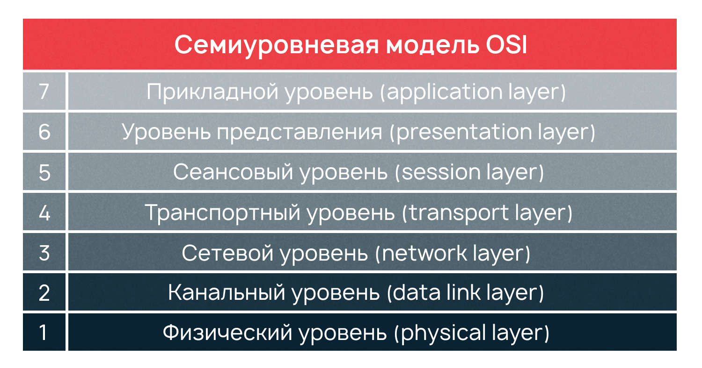
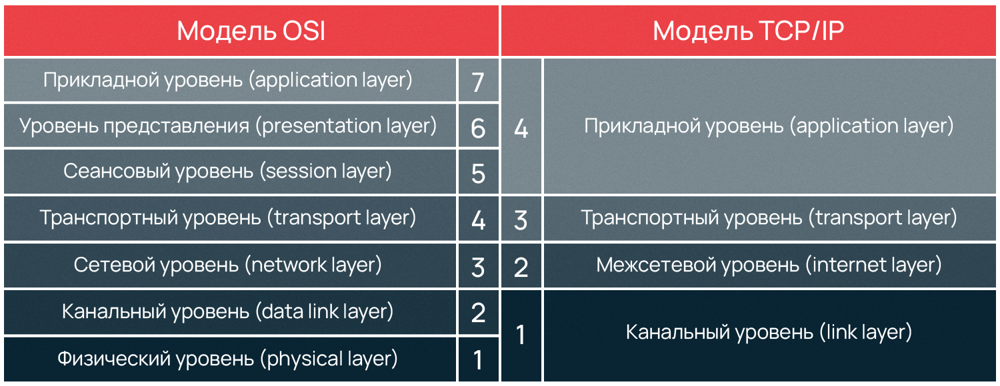

3.osi/tcp-ip
Понятие протокола сети
Сетевой протокол — это набор правил, определяющий принципы взаимодействия устройств в сети. Чтобы отправка и получение информации прошли успешно, все устройства-участники процесса должны принимать условия протокола и следовать им. В сети их поддержка встраивается или в аппаратную часть (в «железо»), или в программную часть (в код системы), или и туда, и туда.
Для взаимодействия протоколов между собой существует модель OSI, или Open Systems Interconnection. Дословно название переводится как «взаимодействие открытых систем».
OSI — эталонная модель взаимодействия устройств в сети
Модель OSI — это модель, позволяющая разным системам связи коммуницировать между собой по общепринятым стандартам. Ее можно сравнить с английским, то есть глобальным, универсальным языком в мире сетей.
Модель основана на принципе разделения коммуникационной системы на семь отдельных уровней.

Модель TCP/IP помогает понять принцип работы и взаимодействия узлов в сети Интернет. Ее название включает в себя два основных протокола, на которых построен интернет. TCP/IP расшифровывается как Transmission Control Protocol/Internet Protocol, или протокол управления передачей (данных)/интернет-протокол.
Модель используется во всем современном интернете, новые сетевые протоколы разрабатываются с опорой на модель TCP/IP.
